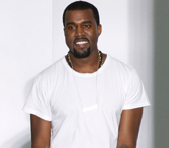
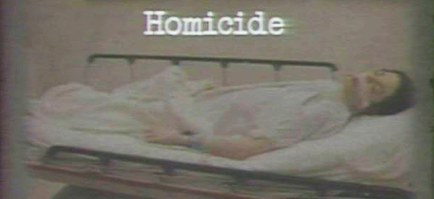
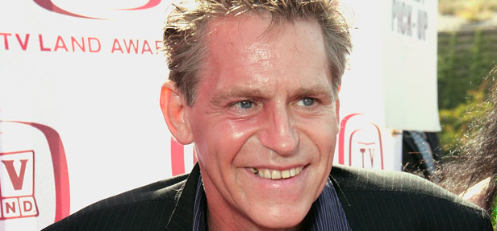

2011-10-02 14:51
Paris - Rap star Kanye West - a regular fashion show attendee - staged his runway debut on Saturday night at an off-calendar event on the sidelines of Paris Fashion Week attended by Vogue editor Anna Wintour. Black and white dominated as West sent models out in leather zipped pants and black dresses with plunging rectangular necklines, while one of the most noted pieces in the spring-summer collection was a bulky backpack in fox fur.
Celebrities packed the long white room, part of a Paris high school, among them the Olsen sisters Mary-Kate and Ashley, both actresses-turned- designers, and Lindsay Lohan who recently tried her hand at designing for Ungaro.
But the mood was business-like despite the buzz surrounding West's first fashion steps, and the singer appeared for a brief bow at show's end dressed simply in grey jeans and white T-shirt with a trim beard.
- AFP
2011-10-01 06:57
Los Angeles - Michael Jackson may have died up to an hour before emergency paramedics even arrived, and his doctor then lied about the star's condition and the key drug that killed him, a court heard on Friday. Conrad Murray was also described as looking like a "deer in the headlights" when a paramedic surprised him in Jackson's bedroom, collecting items shortly after the seemingly-dead star was loaded into an ambulance at his LA mansion. The doctor in charge of the emergency room at the UCLA Medical Centre in Los Angeles recounted how she was ready to pronounce Jackson dead before he was even brought in, since efforts to resuscitate him had failed.
"When the paramedics arrived, the patient had no signs of life, was clinically dead... and the estimated time down was at least 40 minutes," said UCLA medic Richelle Cooper. "I made a determination based on that... to pronounce the patient dead in the field." The senior medic's testimony came at the end of the first week of Murray's manslaughter trial over the King of Pop's death on June 25 2009, from an overdose of the powerful sedative propofol. Murray could be jailed for up to four years over Jackson's death at his mansion in the plush Holmby Hills district of Los Angeles, where the star was rehearsing for a series of comeback shows in London.
Paramedic Richard Senneff recounted how a "frantic" Murray denied that Jackson had an underlying illness, and made no mention of propofol, or the severe insomnia or other conditions from which Jackson suffered. Murray told them that Jackson was suffering only from exhaustion and dehydration and had been "down" since shortly before the paramedics arrived at 12:26, five minutes after receiving a 911 call. Senneff said that claim seemed strange given Jackson's condition, noting the fact that Jackson was hooked up to an intravenous drip, as well as an oxygen-supplying device attached to his nose and a condom catheter to his penis to relieve his bladder without having to get up to go to the bathroom.
"There were multiple observations... His skin was very cool to the touch... his eyes were open, they were dry and his pupils were dilated. When I hooked up the EKG [electrocardiography] machine, there was a flatline," he said. Murray also told them that he had only given Jackson a small amount of lorazepam, a sedative. "He never mentioned the word propofol," said Senneff, referring to the drug blamed for the star's death at the age of 50. The paramedics spent over half an hour trying to revive Jackson, using a combination of cardiopulmonary resuscitation, heart-reviving drugs and direct intubation to get air into his lungs.
At 12:57, doctors at the UCLA hospital said they were ready to pronounce Jackson dead, but Murray insisted they transport him to hospital to continue resuscitation efforts. Jackson was eventually pronounced dead at 14:26. Under cross-examination, Senneff confirmed he had estimated that Jackson could have gone into cardiac arrest - his heart stopping - anything from 20 minutes to an hour before the paramedics arrived. The five-week trial opened on Tuesday, when prosecutors laid out their case that Murray was guilty of "gross negligence", while the doctor's lawyers said the star caused his own death by taking extra drugs without Murray's knowledge.
On the first day, jurors saw chilling images of Jackson's dead body on a gurney and heard a haunting audio recording of the heavily drugged singer talking on the phone only weeks before his death. Bodyguard Alberto Alvarez said on Thursday that Murray ordered him to help remove vials and a saline bag from an intravenous drip stand by the star's bed, even before he had called 911 for emergency paramedics. Senneff recounted an incident when, after Jackson's body was loaded into the ambulance, he returned to the bedroom to collect the paramedics' equipment to find Murray picking up items from the floor next to the bed. "I had the impression he was surprised someone just walked in the room," he said, adding that he looked like a "deer in the headlights... He turned his head sideways to look at me and just [gave me a] blank look."
- AFP
2011-10-01 11:27
Los Angeles - A post mortem has ruled that Taxi and Grease actor Jeff Conaway's May 27 death was accidental and caused by a major internal infection. Los Angeles County coroner Craig Harvey says coroners did not conduct a toxicology test because Conaway had been hospitalised for weeks prior to his death, so his blood would have come back clean. However, Harvey says when Conaway entered the hospital on May 10, opiates and other drugs were in his system.
Conaway struggled publicly with his addictions on Celebrity Rehab with Dr Drew. Conaway, who had repeated back surgeries for an injury, blamed his drug abuse, in part, on his lingering back problem. Conaway was known for playing vain, struggling actor Bobby Wheeler on Taxi and Kenicke, the swaggering best friend of John Travolta in Grease.
- AP
2011-10-01 12:58
New York -At 85, Tony Bennett released an album that debuted at No 1 on the Billboard albums chart this week. Sting, who turns 60 on Sunday, is hoping he will still be going strong at 85, too. "Hopefully the next 25 years will be the same if I have it," the Rock and Roll Hall of Famer said of his own success. "I couldn't live without music. I'd rather play music or die."
Sting is celebrating 25 years as solo artist; in the late 1970s he debuted as the leader of The Police, scoring massive hits with songs like Every Breath You Take and Every Little Thing She Does Is Magic. As a solo singer, he went on to sell multiple multiplatinum albums - and overall, he is the owner of 16 Grammy Awards. This week he released "Sting: 25 Years," his 3-disc greatest hits set. On October 18, he will release "Sting: The Best of 25 Years," which features 12 re-mastered tracks from his solo career.
Sting says he has no plans to release a new album, though he says he is a writing a musical-play "based on my hometown in the north of England. It's about shipbuilding". It will be directed by Pulitzer Prize and Tony Award winner Brian Yorkey. Sting will also launch his "Back to Bass Tour" on October 21 in Boston. He's playing the bass with a small band on the tour. "I just did the 200-date tour with this symphony orchestra, so I just wanted to throw a curve at that and do something like I used to," he said. Sting says though he is a veteran, he's still learning as a musician. "It doesn't end," he said. "There's no way you can say, 'Oh, I finished learning.' You do that when you die." Sting and country singer Vince Gill recently recorded a concert for the CMT series "Crossroads." The special, which features the two singing each others' hits, airs on November 25.
- AP